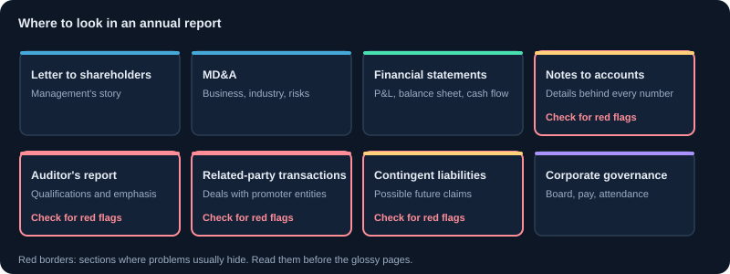
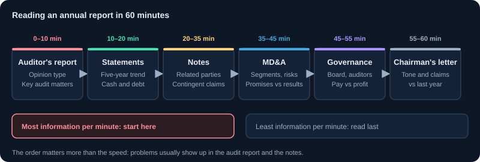

सालाना रिपोर्ट कैसे पढ़ें
कंपनी की सालाना रिपोर्ट के हिस्से, हर हिस्सा क्या बताता है, और चेतावनी के संकेत।
1. सालाना रिपोर्ट क्या है
सालाना रिपोर्ट कंपनी का पूरे साल का दस्तावेज़ है, जो शेयरधारकों के लिए तैयार होता है और एक्सचेंज पर दाखिल होता है। इसमें वित्तीय विवरण, निदेशक रिपोर्ट, प्रबंधन चर्चा, गवर्नेंस जानकारी और वार्षिक आम बैठक (AGM) की सूचना होती है।
2. इस क्रम में पढ़ें
- अध्यक्ष और CEO के पत्र: प्रबंधन जो कहानी सुनाना चाहता है। रणनीति समझने के लिए उपयोगी, सबूत नहीं।
- प्रबंधन चर्चा और विश्लेषण (MD&A): उद्योग का आउटलुक, कारोबार का प्रदर्शन, जोखिम और अवसर। अक्सर सबसे उपयोगी हिस्सा।
- निदेशक रिपोर्ट: डिविडेंड की सिफ़ारिश, महत्वपूर्ण घटनाएँ, संबंधित-पक्ष लेनदेन का सार।
- ऑडिटर की रिपोर्ट: वित्तीय विवरणों पर राय। बिना संशोधन वाली राय सामान्य है; योग्यता या ज़ोर वाले पैराग्राफ़ पढ़ने चाहिए।
- वित्तीय विवरण और नोट्स: हर संख्या के पीछे का विवरण।
- कॉर्पोरेट गवर्नेंस रिपोर्ट: बोर्ड की संरचना, समितियाँ, वेतन और शेयरधारकों की शिकायतें।
3. ऑडिटर की रिपोर्ट
ऑडिटर बताता है कि वित्तीय विवरण सही और उचित तस्वीर देते हैं या नहीं। देखें: योग्य राय (कोई अपवाद), ज़ोर का पैराग्राफ़ (कोई महत्वपूर्ण बात जिस पर ऑडिटर ध्यान दिलाना चाहता है), और मुख्य ऑडिट मामले, जो बताते हैं कि जोखिम कहाँ सबसे ज़्यादा आँका गया। ऑडिटर बदलने के कारण भी देखें।
4. नोट्स टू अकाउंट्स
नोट्स लेखांकन नीतियाँ, कर्ज़, आकस्मिक देनदारियाँ (भविष्य की संभावित ज़िम्मेदारियाँ), संबंधित-पक्ष लेनदेन, सेगमेंट परिणाम और कर्मचारी लाभ समझाते हैं। कई ज़रूरी तथ्य केवल नोट्स में होते हैं। इन्हें पढ़ना सावधान विश्लेषण और सतही नज़र के बीच का फ़र्क है।
5. संबंधित-पक्ष लेनदेन और गवर्नेंस
प्रमोटरों या निदेशकों की कंपनियों से लेनदेन उचित हो सकते हैं, या पैसा कंपनी से बाहर भी ले जा सकते हैं। आकार, शर्तें और दोहराव जाँचें। बोर्ड की स्वतंत्रता, ऑडिट समिति की गतिविधि और सूचीबद्ध नियामक दंड देखें।
6. जोखिमों पर प्रबंधन की टिप्पणी
कंपनियों को जोखिम कारक सूचीबद्ध करने होते हैं। विशेष बातें देखें: ग्राहकों की निर्भरता, नियम, मुद्रा जोखिम, मुकदमे। हर साल न बदलने वाली सामान्य सूची कम उपयोगी है, विस्तृत जोखिम और प्रबंधन उनसे कैसे निपट रहा है, यह बेहतर।
7. दो सालों की तुलना
दो सालाना रिपोर्ट के एक जैसे हिस्से साथ पढ़ें। लेखांकन नीतियों में बदलाव, नई बड़ी देनदारियाँ, ऑडिटर में बदलाव और सेगमेंट मिश्रण में बदलाव देखें। शब्दों का बदलाव भी संख्याओं के बदलाव जितना महत्वपूर्ण हो सकता है।
8. पढ़ने की जाँच-सूची
- पहले MD&A पढ़ें, फिर पत्र।
- ऑडिटर की राय का प्रकार और कोई ज़ोर का पैराग्राफ़ जाँचें।
- कर्ज़, आकस्मिक देनदारी और संबंधित पक्षों के नोट्स पढ़ें।
- जोखिम कारकों की पिछले साल की रिपोर्ट से तुलना करें।
- डिविडेंड का इतिहास और भुगतान का अनुपात संचालन कैश फ़्लो से मिलाएँ।
9. यह कब आती है और कहाँ मिलती है
मार्च में साल ख़त्म करने वाली कंपनियों को छह महीने के भीतर, यानी 30 सितंबर तक, सालाना आम बैठक (AGM) करनी होती है। सालाना रिपोर्ट AGM से कम से कम 21 दिन पहले शेयरधारकों को भेजी जाती है और एक्सचेंजों पर दाख़िल होती है, इसलिए यह आमतौर पर जुलाई से सितंबर की शुरुआत के बीच आती है। इसे NSE या BSE के कंपनी पेज या कंपनी के निवेशक संबंध पेज से डाउनलोड करें; पिछले साल की रिपोर्टें भी वहीं मिलती हैं।
10. ऑडिट राय, की ऑडिट मैटर्स और CARO
ऑडिटर की रिपोर्ट पूरे दस्तावेज़ के सबसे अहम दो-तीन पन्ने हैं। इसकी शब्दावली सीखें।
- अनमॉडिफ़ाइड (साफ़) राय: खाते सही और निष्पक्ष तस्वीर देते हैं। आप यही देखना चाहते हैं।
- क्वालिफ़ाइड राय: एक ख़ास मुद्दे को 'छोड़कर' सही और निष्पक्ष। उस मुद्दे को ध्यान से पढ़ें।
- एडवर्स राय या राय से इनकार: खाते काफ़ी हद तक ग़लत हैं, या ऑडिटर को पर्याप्त सबूत नहीं मिले। गंभीर ख़तरे के संकेत।
- एम्फ़ेसिस ऑफ़ मैटर: साफ़ राय जो फिर भी किसी अहम मुद्दे की ओर इशारा करती है, जैसे बड़ा क़ानूनी मामला या कंपनी के चलते रहने (गोइंग कंसर्न) पर संदेह।
- की ऑडिट मैटर्स (KAM): सूचीबद्ध कंपनियों के लिए वे क्षेत्र जिन्हें ऑडिटर ने सबसे अहम पाया, जैसे राजस्व की पहचान या गुडविल का मूल्यांकन।
- CARO रिपोर्ट: एक परिशिष्ट जिसमें ऑडिटर ख़ास मदों पर रिपोर्ट करता है, जैसे संबंधित पक्षों को क़र्ज़, वैधानिक बकाया चुकाने में देरी और पाई गई धोखाधड़ी।
कार्यकाल के बीच ऑडिटर का इस्तीफ़ा, बिना साफ़ कारण ऑडिटर बदलना, या साल-दर-साल दोहराई जाने वाली क्वालिफ़िकेशन आपको रुककर सोचने पर मजबूर करे।
11. गवर्नेंस, वेतन और सस्टेनेबिलिटी की जानकारी
- कॉर्पोरेट गवर्नेंस रिपोर्ट: बोर्ड की बनावट, स्वतंत्र निदेशकों का हिस्सा, बैठकों में उपस्थिति और समितियाँ।
- निदेशकों की रिपोर्ट: डिविडेंड, रिज़र्व में ट्रांसफ़र, सहायक कंपनियाँ और संबंधित पक्षों के अनुबंध।
- प्रबंधकीय पारिश्रमिक: सूचीबद्ध कंपनियाँ हर निदेशक का वेतन मध्य (मीडियन) कर्मचारी के वेतन के अनुपात में बताती हैं। वेतन बढ़त की तुलना मुनाफ़े की बढ़त से करें।
- बिज़नेस रिस्पॉन्सिबिलिटी एंड सस्टेनेबिलिटी रिपोर्ट (BRSR): सबसे बड़ी सूचीबद्ध कंपनियों के लिए ज़रूरी; पर्यावरण, सामाजिक और गवर्नेंस आँकड़े।
- शेयरहोल्डिंग और प्रमोटर की जानकारी, गिरवी शेयरों समेत, भी रिपोर्ट में होती है।
12. 60 मिनट की पढ़ने की योजना
पूरी रिपोर्ट 300 पन्नों की हो सकती है। यह क्रम सबसे जानकारी वाले पन्ने पहले रखता है।
| मिनट | हिस्सा | क्या देखें |
|---|---|---|
| 0–10 | स्वतंत्र ऑडिटर की रिपोर्ट | राय का प्रकार, की ऑडिट मैटर्स, एम्फ़ेसिस ऑफ़ मैटर, CARO टिप्पणियाँ |
| 10–20 | वित्तीय विवरण और पाँच साल का सार | बिक्री, मार्जिन, मुनाफ़ा, ऑपरेटिंग कैश फ़्लो और क़र्ज़ का रुझान |
| 20–35 | खातों के नोट्स | संबंधित पक्ष लेन-देन, आकस्मिक देनदारी, क़र्ज़, लेखांकन नीतियों में बदलाव |
| 35–45 | प्रबंधन चर्चा और विश्लेषण | सेगमेंट प्रदर्शन, क्षमता, जोखिम, और पिछले साल के वादे बनाम नतीजे |
| 45–55 | कॉर्पोरेट गवर्नेंस और निदेशकों की रिपोर्ट | बोर्ड की स्वतंत्रता, ऑडिटर में बदलाव, पारिश्रमिक |
| 55–60 | चेयरमैन का पत्र | लहजा और दावे; पिछले साल के पत्र से तुलना करें |
13. चेतावनी संकेतों की सूची
- ऑडिटर कार्यकाल के बीच इस्तीफ़ा देता है या बदला जाता है, या ऑडिट राय क्वालिफ़ाइड है।
- लेखांकन नीतियों या वित्त वर्ष के अंत में बार-बार बदलाव।
- प्रमोटर समूह की कंपनियों को बड़े या बढ़ते क़र्ज़, अग्रिम या गारंटी।
- इक्विटी के मुक़ाबले बड़ी आकस्मिक देनदारी (विवादित टैक्स, गारंटी, क़ानूनी दावे)।
- कई साल तक मुनाफ़ा बढ़ना जबकि ऑपरेटिंग कैश फ़्लो कमज़ोर रहे।
- मुनाफ़े से कहीं तेज़ बढ़ता पारिश्रमिक, या अस्पष्ट सेवाओं के लिए संबंधित पक्षों को कई भुगतान।
- चेयरमैन के पत्र के वादे जो बिना नतीजों के साल-दर-साल दोहराए जाते हैं।
चार्ट और चित्र


कार्य उदाहरण
इक्विटी के मुक़ाबले आकस्मिक देनदारी
₹2,000 करोड़ इक्विटी वाली कंपनी ₹900 करोड़ की आकस्मिक देनदारी बताती है, ज़्यादातर विवादित टैक्स माँगें। अगर इनमें से एक-तिहाई भी असल भुगतान बनें, तो लगभग ₹300 करोड़ (इक्विटी का 15%) जाएँगे। जोखिम को कंपनी की शुद्ध संपत्ति के सामने तौलें।
मुनाफ़े के मुक़ाबले वेतन
तीन साल में शुद्ध लाभ 10% बढ़ा जबकि प्रबंध निदेशक का वेतन 80% बढ़ा और मीडियन कर्मचारी वेतन से अनुपात 120 से 210 गुना हो गया। ये आँकड़े सीधे पारिश्रमिक की जानकारी से आते हैं और गवर्नेंस के बारे में कुछ कहते हैं।
वास्तविक परिस्थितियाँ
वह नोट जो अहम था
कंपनी का मुनाफ़ा और बिक्री स्थिर दिखते हैं। संबंधित पक्ष वाले नोट में प्रमोटर की कंपनी को दिया क़र्ज़ दो साल में ₹50 करोड़ से ₹400 करोड़ हो गया, बिना कोई ब्याज मिले। आगे के पन्नों में इसका ज़िक्र नहीं। एक साल बाद क़र्ज़ बट्टे खाते में जाता है।
दो साल के वादों की तुलना
पिछले साल की रिपोर्ट में नया प्लांट 'अगले साल तक' का वादा था। इस साल की रिपोर्ट कहती है कि यह अगले साल तक टल गया और लागत 30% बढ़ गई। दो रिपोर्टें साथ पढ़ने से प्रबंधन का रिकॉर्ड किसी एक से बेहतर दिखता है।
उपयोग के मामले
- किसी कंपनी में निवेश से पहले ऑडिटर की राय और की ऑडिट मैटर्स जाँचना।
- संबंधित पक्ष लेन-देन और प्रमोटर समूह की कंपनियों को दिए क़र्ज़ खोजना।
- आकस्मिक देनदारी को इक्विटी के मुक़ाबले मापना।
- पिछले वादों की तुलना नतीजों से करके प्रबंधन की विश्वसनीयता परखना।
मुख्य बातें
- पहले ऑडिटर की रिपोर्ट और नोट्स पढ़ें; चमकदार पन्ने आख़िर में।
- साफ़ राय न्यूनतम है; क्वालिफ़िकेशन, राय से इनकार और ऑडिटर का इस्तीफ़ा ख़तरे के संकेत हैं।
- संबंधित पक्ष लेन-देन और आकस्मिक देनदारी नोट्स में छिपी रहती हैं।
- गवर्नेंस बोर्ड की स्वतंत्रता, वेतन की जानकारी और ऑडिटर बदलाव में दिखता है।
- प्रबंधन के वादे परखने के लिए इस साल की रिपोर्ट की तुलना पिछले साल से करें।
सीखने वालों के सामान्य प्रश्न
क्या पूरी सालाना रिपोर्ट पढ़नी ज़रूरी है?
नहीं। एक योजना अपनाएँ: ऑडिटर की रिपोर्ट, वित्तीय विवरण, मुख्य नोट्स, प्रबंधन चर्चा और गवर्नेंस। इससे लगभग एक घंटे में ज़्यादातर अहम बातें आ जाती हैं।
सालाना रिपोर्ट और तिमाही नतीजों में क्या अंतर है?
तिमाही नतीजे छोटी, लिमिटेड रिव्यू वाली तालिकाएँ हैं। सालाना रिपोर्ट ऑडिटेड और कहीं ज़्यादा पूरी है: इसमें बैलेंस शीट, कैश फ़्लो स्टेटमेंट, नोट्स, गवर्नेंस और प्रबंधन की चर्चा होती है।
गोइंग कंसर्न संदेह क्या है?
ऑडिटर की चेतावनी कि कंपनी अगले साल चलती नहीं रह पाएगी, आमतौर पर घाटे, क़र्ज़ में चूक या फ़ंडिंग की कमी के कारण। यह किसी रिपोर्ट की सबसे गंभीर चेतावनियों में से एक है।
संबंधित पक्ष लेन-देन कहाँ बताए जाते हैं?
वित्तीय विवरण के एक अलग नोट में, और अहम अनुबंधों के लिए निदेशकों की रिपोर्ट में। प्रमोटर समूह की कंपनियों के साथ क़र्ज़, गारंटी, ख़रीद और बिक्री देखें।
केवल शैक्षिक सामग्री, निवेश सलाह नहीं। बाज़ार में जोखिम होता है, जिसमें पूँजी खोने का जोखिम भी शामिल है। उदाहरण सरल किए गए हैं और इनमें शुल्क, टैक्स या स्लिपेज शामिल नहीं हो सकते।